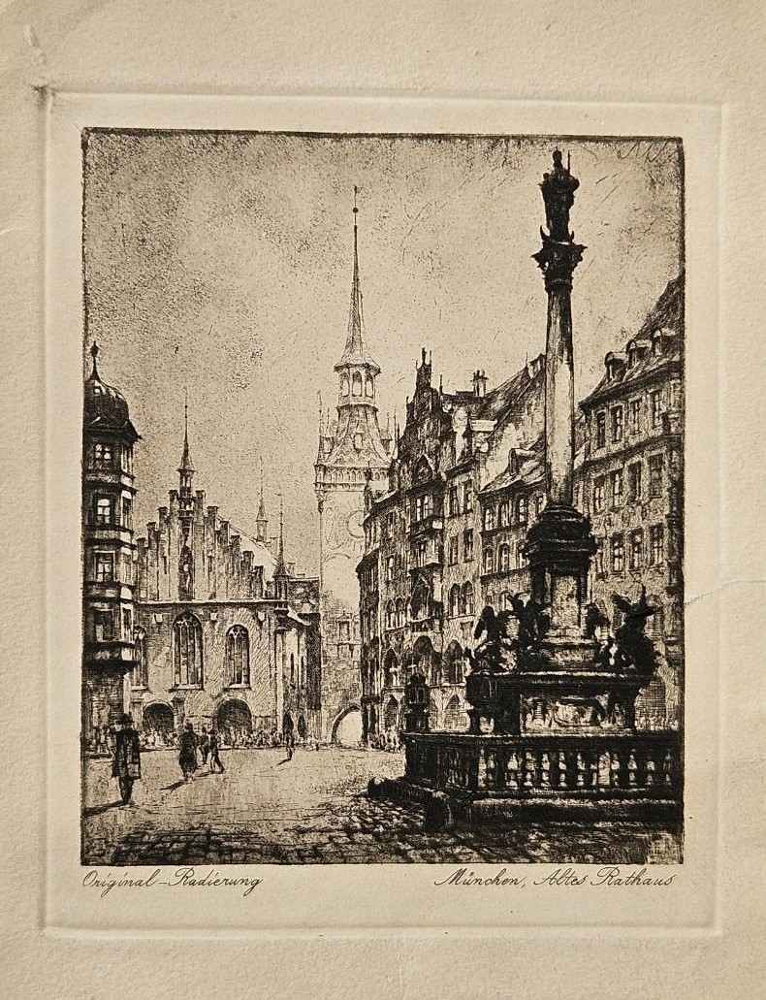

Edelweiss abrió sus puertas en 1998 en un pintoresco barrio de Múnich, Alemania, como un tributo a las ricas tradiciones culinarias bávaras y alpinas. Inspirado en la emblemática flor "edelweiss" de los Alpes, símbolo de amor y aventura, el restaurante se propuso desde sus inicios capturar el espíritu de las montañas alemanas en cada detalle. Con una fachada de madera oscura decorada con flores y un interior rústico y acogedor, Edelweiss se convirtió rápidamente en un refugio culinario tanto para locales como para turistas, que encuentran en sus platos el sabor auténtico de la cocina alemana y un ambiente que evoca los días de descanso en una cabaña alpina.
El fundador del restaurante, Karl Weiss, un chef alemán con raíces bávaras, creció en una familia de granjeros en la región de Baviera, donde aprendió el arte de la cocina con ingredientes locales y frescos, y recetas transmitidas de generación en generación. Tras años trabajando en varios restaurantes de Alemania y Suiza, Karl decidió volver a sus raíces para compartir con el público los sabores de su infancia y las técnicas tradicionales que había perfeccionado. Así, Edelweiss no es solo un restaurante, sino también un homenaje a sus ancestros y a las tradiciones culinarias alemanas que han perdurado con los años.
La carta de Edelweiss combina platos tradicionales alemanes con un toque moderno y creativo que caracteriza a Karl. Entre sus especialidades están el famoso *Schweinebraten*, un asado de cerdo jugoso y especiado que se sirve con *Knödel*, o albóndigas de patata, y *Sauerkraut*, el clásico chucrut alemán. Otra especialidad es el *Sauerbraten*, carne de res marinada y cocida a fuego lento, acompañada de repollo rojo y puré de papas. Los postres incluyen el tradicional *Apfelstrudel* y el *Käsekuchen*, una tarta de queso suave y cremosa. Cada plato se prepara con ingredientes de granjas cercanas, manteniendo viva la tradición de usar productos frescos y locales.
Además de la comida, Edelweiss es conocido por su cálida hospitalidad bávara. Al cruzar la puerta, los clientes son recibidos por el aroma a pan horneado y especias, mientras una decoración de madera tallada, fotografías antiguas de los Alpes y banderas bávaras crean un ambiente acogedor. El personal, vestido con trajes tradicionales alemanes como el *Dirndl* y el *Lederhosen*, atiende a cada cliente con atención y calidez, ofreciendo recomendaciones y compartiendo historias sobre los orígenes de los platos, lo cual enriquece la experiencia de cada comensal.
La filosofía de Edelweiss se basa en la autenticidad y el respeto por las tradiciones culinarias alemanas. Karl y su equipo trabajan de la mano con granjeros y productores locales para obtener los ingredientes más frescos y apoyar a la economía local, una práctica que Karl aprendió desde joven. La cerveza, que no puede faltar en un restaurante alemán, proviene de cervecerías familiares de Baviera, y se sirve en jarras heladas para acompañar perfectamente cualquier plato. Esta conexión con la comunidad le ha permitido al restaurante ganar una base de clientes leales que aprecian el enfoque sostenible y la dedicación de Karl.
A lo largo de los años, Edelweiss ha ganado fama no solo en Múnich, sino también entre los turistas que buscan una experiencia auténtica de la cocina alemana. Desde su apertura en 1998, el restaurante ha recibido múltiples reconocimientos y se ha convertido en un lugar de encuentro para aquellos que desean explorar la gastronomía bávara. Para Karl, Edelweiss es un sueño hecho realidad y un lugar donde las tradiciones se preservan y celebran en cada plato, transmitiendo a cada visitante el espíritu de la Baviera alpina y el amor por una cocina auténtica que ha resistido el paso del tiempo.